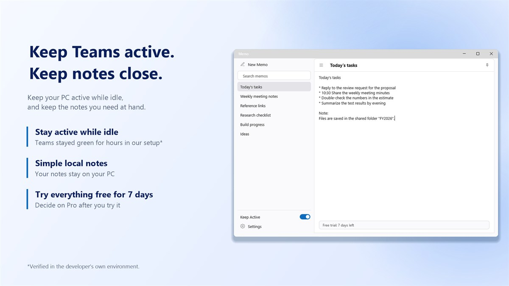

Last updated: November 27, 2026
What is a mouse jiggler?
It moves the mouse cursor a tiny amount at regular intervals so the PC thinks someone is using it. There are two main kinds.
- USB hardware: a small device that the PC recognizes as a mouse. No software to install, but you have to buy it.
- Software: an app on the PC moves the cursor automatically. Some are free and some are paid.
People use them to avoid screen locks while away, to keep a PC awake during long jobs, or to avoid showing "Away" in online meetings.
Common frustrations with mouse jigglers
- Cursor-moving types move the pointer while you work. You can miss a button, or the cursor can seem to drift while you share your screen.
- Hardware types need to be bought, use a USB port, and are one more thing to remember when you travel.
- On a work PC, plugging in USB devices or installing software may be restricted.
How ActiveMemo is different
ActiveMemo is a Windows app that combines Keep Active, which keeps your PC active while you are at your desk, with quick local notes. It does not work by moving the mouse cursor, so the pointer never jumps while you work.
- No hardware. Just install it from Microsoft Store.
- It starts turned on and keeps working even when minimized.
- It has a notepad built in, so you can write down what you think of while you are at your desk.
- Notes are stored on your PC. No cloud account is needed to use notes.

Comparing the three options
| USB hardware | Cursor-moving software | ActiveMemo | |
|---|---|---|---|
| How you get it | Buy it and plug it in | Download and install | Install from Microsoft Store |
| Cursor movement | Moves (depends on the device) | Moves | Does not move the cursor |
| USB port | Uses one | Not used | Not used |
| Notes | No | Depends on the product | Yes (stored locally on your PC) |
| Trial | Depends on the product | Depends on the product | All features free for 7 days |
The hardware and software columns describe general tendencies. Individual products differ.
What ActiveMemo cannot do
Before you start
- Keep Active does not work while your PC is asleep or the screen is locked.
- Closing the app with the × button also stops Keep Active.
- How long a status such as Teams stays green can vary with your setup and your organization's settings.
- Please follow your employer's or organization's rules. We do not recommend using it to misrepresent your working status.
FAQ
Does it work the same way as a mouse jiggler?
The goal is similar, but it does not work by moving the cursor. It is an app that keeps your PC active while you are at your desk.
Is it free?
Every feature is free for 7 days from the first launch. To keep using it after that, you need ActiveMemo Pro (a subscription). Without Pro you can still view, copy, and export your existing notes.
Does it run on Mac or phones?
ActiveMemo is a Windows app.
Can I use it on a work PC?
That depends on your employer or organization. Please check beforehand that installing and using it is allowed.